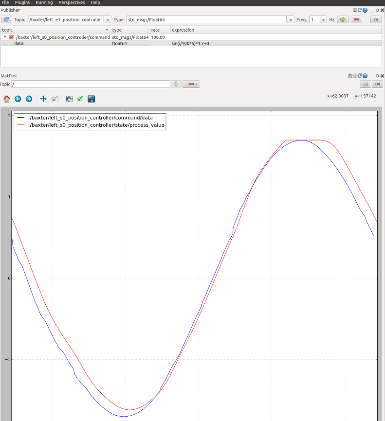

Ссылки: Tutorial: ROS Control и Gazebo (classic.gazebosim.org)
wiki.ros.org/ros_control
Пакеты ros_control принимают в качестве входных данных данные о совместном состоянии от датчиков привода вашего робота и заданное значение на входе. В них используется общий механизм обратной связи по контуру управления, обычно ПИД-регулятор, для управления выходными данными, обычно усилием, передаваемым на ваши приводы. ros_control усложняется для физических механизмов, которые не имеют взаимно однозначных отображений совместных позиций, усилий и т.д., но эти сценарии учитываются с использованием передач.
Интерфейс joint_limits_interface не используется самими контроллерами (он не реализует аппаратный интерфейс), но вместо этого работает после обновления контроллеров в методе write() (или эквивалентном) абстракции robot. Принудительное применение ограничений приведет к перезаписи команд, заданных контроллерами, и не будет работать с отдельным буфером необработанных данных.
sudo apt-get install ros-noetic-ros-control ros-noetic-ros-controllers
Имитация работы контроллеров робота в Gazebo может быть выполнена с помощью ros_control и простого адаптера плагинов Gazebo. Ниже представлен обзор взаимосвязи между моделированием, аппаратным обеспечением, контроллерами и передачами.:

В этом руководстве использованы многие концепции, описанные в предыдущих руководствах. Мы снова будем использовать RRBot, который был настроен в руководстве по использованию URDF в Gazebo, в качестве примера для плагинов, описанных здесь.
Убедитесь, что вы уже установили ros_control, ros_controllers и их зависимости.
------------------------------------------------------------------------
Пример:
<transmission name="simple_trans"> 2 <type>transmission_interface/SimpleTransmission</type> 3 <joint name="foo_joint"> 4 <hardwareInterface>EffortJointInterface</hardwareInterface> 5 </joint> 6 <actuator name="foo_motor"> 7 <mechanicalReduction>50</mechanicalReduction> 8 <hardwareInterface>EffortJointInterface</hardwareInterface> 9 </actuator> 10 </transmission>Атрибут name определяет уникальное имя трансмиссии.
----------------------------------------------------------------------------------------------------------------
Для целей gazebo_ros_control в его текущей реализации единственной важной информацией в этих тегах передачи являются:
<joint name="">
<type> тип передачи. В настоящее время реализован только "transmission_interface/SimpleTransmission". (не стесняйтесь добавлять больше)
<hardwareInterface> - внутри <actuator> and <joint> тегов. это указывает плагину gazebo_ros_control, какой аппаратный интерфейс загружать (интерфейсы положения, скорости или усилия). В настоящее время реализованы только интерфейсы усилия. (не стесняйтесь добавлять больше)
Остальные имена и элементы в настоящее время игнорируются.
По умолчанию код плагина (в конце urdf):
<gazebo>
<plugin name="gazebo_ros_control" filename="libgazebo_ros_control.so">
<robotNamespace>/MYROBOT</robotNamespace>
</plugin>
</gazebo>
Тег <plugin> имеет дочерние теги:
Tutorial: Using Gazebo plugins with ROS
Поведение по умолчанию обеспечивает следующие интерфейсы ros_control:
Эти плагины должны наследовать gazebo_ros_control::RobotHWSim, который реализует имитируемый аппаратный интерфейс ros_control::RobotHW. RobotHWSim предоставляет доступ на уровне API для чтения и управления совместными свойствами в Gazebo simulator.
Соответствующий подкласс RobotHWSim указан в модели URDF и загружается при загрузке модели робота. Например, следующий XML-файл загрузит плагин по умолчанию (то же поведение, что и при использовании тега
Создаём новый пакет:
Узел controller_spawner запускает два контроллера совместного позиционирования для RRBot, запуская скрипт на python, который выполняет сервисный вызов для диспетчера контроллеров ros_control. Сервисные вызовы сообщают диспетчеру контроллеров, какие контроллеры вам нужны. Он также загружает третий контроллер, который публикует общие состояния всех соединений с помощью hardware_interfaces и объявляет тему в /joint_states. Spawner - это просто вспомогательный скрипт для использования с roslaunch.
В последней строке запускается узел robot_state_publisher, который просто прослушивает сообщения /join_states от join_state_controller, а затем публикует преобразования в /tf. Это позволяет вам видеть вашего моделируемого робота в Rviz, а также выполнять другие задачи.
Включите публикатора топика, установив флажок слева от названия топика. Установите в столбце "Частота" значение 100 (частота, с которой мы отправляем ит-команды, в данном случае - 100 Гц).
Затем раскройте тему так, чтобы вы увидели строку "данные". В столбце "выражение", в строке "данные", попробуйте использовать разные значения в радианах между пределами соединения joint1 - в случае RRBot ограничений нет, поскольку соединения непрерывны, поэтому подойдет любое значение. Вы должны быть в состоянии заставить RRBot поворачиваться, если вы выполняете это руководство с этим роботом.
Затем в том же поле выражения мы заставим его автоматически изменять значения, используя синусоидальную волну. Добавьте следующее:
Добавьте еще один раздел в плагин Plot, который отслеживает фактическое положение управляемого привода. Вы захотите уменьшить разницу между этими двумя значениями, настроив коэффициенты усиления PID, как показано на следующем шаге. Для RRBot:

Примечание: известно, что после запуска плагина RQT plot в течение некоторого времени (>1 минуты) возникают ошибки. Рисунки начинают странно отображаться. Текущее решение - нажать синюю кнопку обновления в правом верхнем углу плагина.
Добавьте плагин "Dynamic Reconfigure" в RQT и нажмите "Expand All", чтобы просмотреть дополнительные опции. Предполагая, что ваш контроллер использует PID, вам следует использовать параметр "pid". Нажав на нее, вы увидите 5 ползунков, которые позволяют настроить контроллер, как показано на следующем скриншоте. Изменяйте эти значения, пока не добьетесь желаемой производительности вашего контроллера.
Используйте roslaunch, чтобы сохранить вашу перспективу RQT
Предполагая, что вы уже запускаете joint_state_controller, как описано выше в ваших файлах:
Затем добавьте в Rviz тип отображения "RobotModel", и вы увидите, как ваш смоделированный робот в Gazebo визуализируется в Rviz!
<gazebo>
<plugin name="gazebo_ros_control" filename="libgazebo_ros_control.so">
<robotNamespace>/MYROBOT</robotNamespace>
<robotSimType>gazebo_ros_control/DefaultRobotHWSim</robotSimType>
</plugin>
</gazebo>
RRBot Example
Мы добавляем блок <transmission>, аналогичный приведенному ниже, для каждого соединения, которое мы хотим задействовать в Gazebo. Обратите внимание, что <hardwareInterface> должен быть включен как в теги <joint>, так и <actuator> (смотрите здесь проблему с ros_control). Откройте свой файл rrbot.xacro, и в нижней части файла вы должны увидеть:
<transmission name="tran1">
<type>transmission_interface/SimpleTransmission</type>
<joint name="joint1">
<hardwareInterface>EffortJointInterface</hardwareInterface>
</joint>
<actuator name="motor1">
<hardwareInterface>EffortJointInterface</hardwareInterface>
<mechanicalReduction>1</mechanicalReduction>
</actuator>
</transmission>
<transmission name="tran2">
<type>transmission_interface/SimpleTransmission</type>
<joint name="joint2">
<hardwareInterface>EffortJointInterface</hardwareInterface>
</joint>
<actuator name="motor2">
<hardwareInterface>EffortJointInterface</hardwareInterface>
<mechanicalReduction>1</mechanicalReduction>
</actuator>
</transmission>
Вы также увидите плагин gazebo_ros_control в rrbot.gazebo, который используется во всех тегах <transmission>
<gazebo>
<plugin name="gazebo_ros_control" filename="libgazebo_ros_control.so">
<robotNamespace>/rrbot</robotNamespace>
</plugin>
</gazebo>
Создайте пакет ros_controls
Далее нам нужно будет создать файл конфигурации и файл запуска для наших контроллеров ros_control, которые взаимодействуют с Gazebo.
mkdir ~/catkin_ws
cd ~/catkin_ws
catkin_create_pkg MYROBOT_control controller_manager joint_state_controller robot_state_publisher
cd MYROBOT_control
mkdir config
mkdir launch
Полный рабочий пример пакета, о котором мы говорим в этом разделе, можно найти по адресу rrbot_control.
Создаём конфигурационный файл.yaml
Значения коэффициента усиления и настройки контроллера должны быть сохранены в файле yaml, который загружается на сервер параметров через файл roslaunch. В папке config вашего пакета MYROBOT_control адаптируйте следующий пример RRBot к вашему роботу как MYROBOT_control/config/rrbot_control.yaml.:
rrbot:
# Publish all joint states -----------------------------------
joint_state_controller:
type: joint_state_controller/JointStateController
publish_rate: 50
# Position Controllers ---------------------------------------
joint1_position_controller:
type: effort_controllers/JointPositionController
joint: joint1
pid: {p: 100.0, i: 0.01, d: 10.0}
joint2_position_controller:
type: effort_controllers/JointPositionController
joint: joint2
pid: {p: 100.0, i: 0.01, d: 10.0}
Более подробную информацию об этих контроллерах смотрите в следующем разделе.
Создание launch файла
Создайте файл launch для запуска контроллеров ros_control. В папке launch создайте файл MYROBOT_control/launch/MYROBOT_control.launch и вставьте следующий код:
<launch>
<!-- Load joint controller configurations from YAML file to parameter server -->
<rosparam file="$(find rrbot_control)/config/rrbot_control.yaml" command="load"/>
<!-- load the controllers -->
<node name="controller_spawner" pkg="controller_manager" type="spawner" respawn="false"
output="screen" ns="/rrbot" args="joint1_position_controller joint2_position_controller joint_state_controller"/>
<!-- convert joint states to TF transforms for rviz, etc -->
<node name="robot_state_publisher" pkg="robot_state_publisher" type="robot_state_publisher"
respawn="false" output="screen">
<remap from="/joint_states" to="/rrbot/joint_states" />
</node>
</launch>
Первая строка, "rosparam", загружает настройки контроллера на сервер параметров путем загрузки файла конфигурации yaml (обсуждается в следующем разделе).
Запускаем контроллеры с помощью roslaunch
Запустите симуляцию RRBot:
roslaunch rrbot_gazebo rrbot_world.launch
Загрузите контроллеры для двух соединений, запустив второй файл запуска:
roslaunch rrbot_control rrbot_control.launch
Использование сервиса вручную
Если вы сначала загрузите rrbot_control.файлы yaml на сервер параметров, вы можете загрузить контроллеры вручную с помощью запросов на обслуживание. Мы приведем их здесь для справки, хотя обычно предпочитаем roslaunch.
Загрузить контроллеры:
rosservice call /rrbot/controller_manager/load_controller "name: 'joint1_position_controller'"
rosservice call /rrbot/controller_manager/load_controller "name: 'joint2_position_controller'"
Стартовать контроллеры:
rosservice call /rrbot/controller_manager/switch_controller "{start_controllers:
['joint1_position_controller','joint2_position_controller'], stop_controllers: [], strictness: 2}"
Отправка примеров команд вручную
Отправить им примеры совместных команд для тестирования:
rostopic pub -1 /rrbot/joint1_position_controller/command std_msgs/Float64 "data: 1.5"
rostopic pub -1 /rrbot/joint2_position_controller/command std_msgs/Float64 "data: 1.0"
Используем RQT Для Отправки Команд
В этом разделе мы рассмотрим инструменты, которые помогут вам визуализировать производительность вашего контроллера и настроить любые коэффициенты усиления / параметры, которые могут быть у контроллера, в частности, коэффициент усиления PID. Мы будем использовать RQT, пользовательский интерфейс ROS на основе плагинов, поэтому сначала убедитесь, что он установлен.
Старт RQT:
rosrun rqt_gui rqt_gui
Add a Command Publisher
В меню "Plugins" RQT добавьте плагин "Topics-> Message Publisher'", затем выберите топик из выпадающего списка, которая управляет любым конкретным контроллером, который вы хотите опубликовать. Для RRBot добавьте контроллер:
/rrbot/joint1_position_controller/command
Затем нажмите зеленую кнопку со знаком "плюс" в правом верхнем углу экрана.
sin(i/100)
Для более совершенного управления вы можете настроить его таким образом, чтобы он подавал синусоидальную волну в точном соответствии с размерами суставов вашего робота:
sin(i/rate*speed)*diff + offset
Объяснение переменных:
Визуализируйте работу контроллера
Добавьте плагин Plot в RQT и добавьте ту же тему, что и та, которую вы выбрали выше, для темы publisher:
/rrbot/joint1_position_controller/command/data
Нажмите зеленую кнопку "Добавить". Теперь на экране должна появиться синусоидальная волна.
/rrbot/joint1_position_controller/state/process_value
Ваш экран должен выглядеть примерно так:
Настройка коэффициента усиления PID
Наконец, мы будем использовать динамическую реконфигурацию для настройки пропорционального, производного и интегрального коэффициентов усиления ПИД-регулятора, предполагая, что это применимо к вашему роботу.
Предварительно настроенную перспективу RQT для rrbot можно легко запустить с помощью следующей команды:
roslaunch rrbot_control rrbot_rqt.launch
Вы можете использовать это в качестве шаблона для работы с вашим собственным роботом.
Подключите Rviz к Gazebo
еперь, когда вы используете ros_control для отправки команд вашему роботу в симуляторе, вы также можете использовать ros_control jointstatecontroller для считывания состояния робота из Gazebo. Идея хорошего симулятора заключается в том, что вы должны иметь возможность использовать на своем реальном оборудовании то же программное обеспечение, что и при моделировании. Хорошей отправной точкой для этого является визуализация вашего моделируемого робота в Rviz, аналогично тому, как это делается с реальным оборудованием.
rosrun rviz rviz
В разделе "Global Options" измените "Fixed Frame" на "world", чтобы устранить все возможные ошибки, которые он может вам выдать.